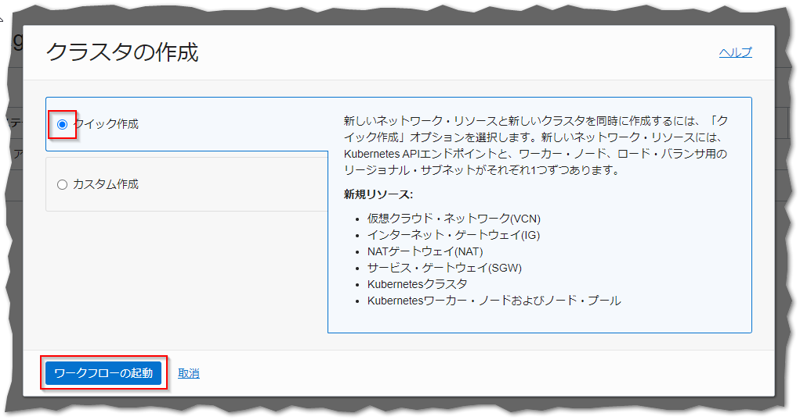
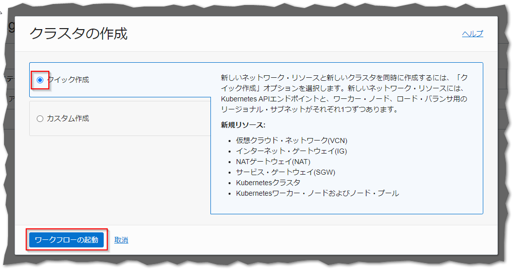
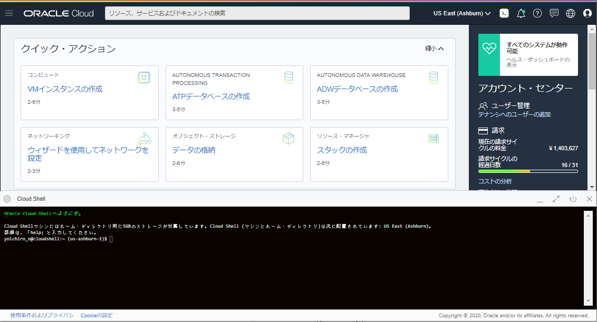
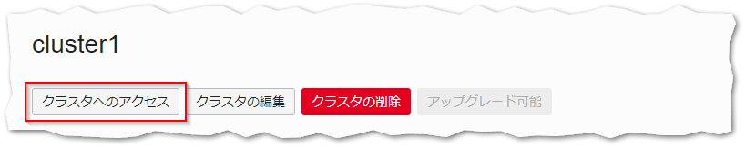
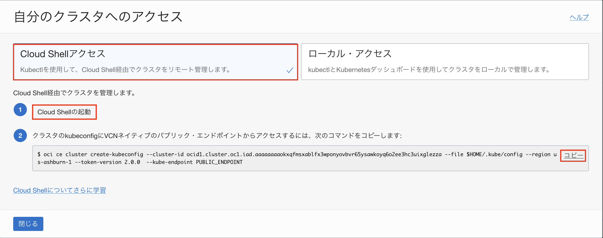

マネージドKubernetesサービスであるOralce Container Engine for Kubernetes(OKE)を中心とした、コンテナ・ネイティブなサービス群です。
Oracle Container Engine for Kubernetes（以下OKE）は、OracleのマネージドKubernetesサービスです。この共通手順では、OCIやOKEを操作するためCLI実行環境の構築（Resource Managerを使用）と、OKEを使ってKubernetesクラスターをプロビジョニングするまでの手順を記します。
前提条件
- クラウド環境
- Oracle Cloudのアカウントを取得済みであること
ハンズオン環境のイメージ

1.OKEクラスターのプロビジョニング
ここでは、OKEクラスターのプロビジョニングを行います。ここでの手順を実施することにより、OKEのコントロールプレーンとKubernetesクラスターの構築が同時に行われます。

はじめに、OCIコンソール画面左上のハンバーガーメニューを展開し、開発者サービス⇒Kubernetes Clusters (OKE)を選択します。

クラスタ一覧画面で、クラスタの作成をクリックします。

次のダイアログでクイック作成を選択し、送信をクリックします。

次のダイアログで、シェイプにVM.Standard.E5.Flexを選択、 ノード数に1を入力します。
他の値はデフォルトのままで問題ありません。
Kubernetes APIエンドポイントについて
管理者は、クラスタのKubernetes APIエンドポイントを、プライベート・サブネットまたはパブリック・サブネットに構成することができます。
VCNルーティングとファイアウォール・ルールを使うことで、Kubernetes APIエンドポイントへのアクセスを制御し、オンプレミスもしくは同一VCN上に構築した踏み台サーバからのみアクセス可能にすることができます。
Kubernetesワーカー・ノードについて
プライベートかパブリックによって、ワーカーノードに付与されるIPアドレスの種類が変わります。
プライベートは、ワーカーノードがプライベートIPのみを付与された状態でプロビジョニングを行います。
ワーカーノードにパブリックIPを付与する必要がある場合は、パブリックを選択してください。
シェイプについて
OKEでは、VM、ベアメタル、GPU、HPCなどの様々なシェイプをご利用頂くことができます。
また、プロセッサ・アーキテクチャとしても、Intel/AMD/ARMベースのインスタンスから選択頂くことができます。
ワークロードに応じて、適切なシェイプを選択してください。
ノード数について
ノードはリージョン内の可用性ドメイン全体（または、東京リージョンなど単一可用性ドメインの場合、その可用性ドメイン内の障害ドメイン全体）に可能な限り均等に分散されます。
実運用の際は可用性を考慮し、適切なノード数を指定してください。
そして、ダイアログの下まで移動し次をクリックします。
 

次のダイアログは入力内容を確認し、「基本的なクラスタの確認」では、基本的なクラスタを作成にチェックを入れて、クラスタの作成をクリックします。
拡張クラスタについて
拡張クラスタは、基本クラスタで提供される機能に加えて、Virtual Nodes、アドオン機能、WorkloadIdentity、SLA等の機能を利用できます。クラスタごとに課金が発生します。
詳細はこちらを参照してください。
デフォルトの設定では、クラスタが必要とするネットワークリソース等の構成が自動的に行われます。途中経過がダイアログに表示されますので、全て完了したら、Closeボタンをクリックします。

クラスタの詳細画面表示されたら、クラスタ・ステータスに表示される内容を確認してください。この時点では作成中と表示されますが、プロビジョニングが完了するとアクティブとなります（完了までにはおおよそ5～10分程度かかります）。
この後の進め方について
クラスタが完成するまでの間に次章「3 . CLI実行環境(Cloud Shell)の準備」の手順を進めてください。
2.CLI実行環境(Cloud Shell)の準備
つぎにOKEクラスターなどのCLIを実行するための環境を準備します。

本ハンズオンではOKEクラスターを操作するいくつかのCLIを実行するための環境としてCloud Shellと呼ばれるサービスを使用します。 Cloud ShellはOracle CloudコンソールからアクセスできるWebブラウザベースのコンソールです。 Cloud Shellには、OCI CLIをはじめとして、例えば、次のような便利なツールおよびユーティリティの現在のバージョンがインストールされています。他にもたくさんインストールされています。 詳細は、公式ドキュメントの記載をご確認ください。
| インストール済みツール |
|---|
| Git |
| Java |
| Python |
| GraalVM JDK 17 および Native Image ツール |
| OCI SDK(Java/Python/Go/JavaScript/TypeScript) |
| SQLcl |
| kubectl |
| helm |
| maven |
| gradle |
| terraform |
| ansible |
Cloud Shellついて
Cloud Shellは開発専用ではなく、一時的にOCIコマンドを実行したい場合などライトなご利用を想定したサービスであるため、実運用時はCLI実行環境を別途ご用意ください。
OCIコンソール上で右上にあるターミナルのアイコンをクリックし、Cloud Shellをクリックします。

しばらく待つと、Cloud Shellが起動します。

Cloud Shell は、ARM(aarch64)とX86_64のアーキテクチャを選択できます。こちらのチュートリアルは、X86_64をベースに構成されています。そのため、アーキテクチャのタイプを確認します。もし、ARM(aarch64)が選択されている場合は、X86_64に変更して、Cloud Shell を再起動します。
最初に、「アクション」-「アーキテクチャ」選択します。

「現在のアーキテクチャ」が ARM(aarch64) の場合は、X86_64 を選択して、「確認して再起動」ボタンをクリックします。
「現在のアーキテクチャ」が X86_64 の場合は、そのまま、「取消」を選択してください。

Cloud Shell 再起動後、「アクション」-「アーキテクチャ」選択します。そして、X86_64 であることを確認して、「取消」を選択します。

Cloud Shell の操作に入ります。
Cloud Shellは、必要なCLIはデフォルトでインストール済みです。
例えば以下のようなコマンドを実行できます。
kubectl version --client
以下のような結果となれば、kubectlは正常にインストールされています。
Client Version: vX.XX.X
上記は、kubectl（Kubernetesの管理用のコマンドラインツール）の、バージョン情報を表示するコマンドとその結果です。
以上で、準備作業は完了です。
3.kubectlのセットアップ

次に、kubectlのセットアップを行って実際にクラスターにアクセスしてみます。
OCIコンソール画面左上のハンバーガーメニューを展開し、開発者サービス⇒Kubernetes Clusters (OKE)を選択します。
先の手順で作成しておいたcluster1の名前をクリックします。

ここからの手順について
ここからの手順を進めるには、OKEクラスターのプロビジョニングが完了している必要があります。
クラスターの詳細画面で、クラスタ・ステータスがアクティブとなっていることを確認してください。まだ作成中だった場合には、ステータスが変わるまで少しお待ち下さい。
クラスターの詳細画面で、クラスタへのアクセスをクリックします。

「自分のクラスタへのアクセス」というダイアログが表示されます。
OKEへのアクセス方法は「Cloud Shellアクセス」と「ローカル・アクセス」の2種類が存在します。
今回はCLI環境としてCloud Shellを利用するので、「Cloud Shellアクセス」でアクセスを行います。
ダイアログ上部の「Cloud Shellアクセス」をクリックします。
表示されたダイアログの中にkubetctlの設定ファイルを取得するためのコマンドが表示されます。

まず Cloud Shellを起動します。
既に起動している場合は本手順は必要ありません。
Cloud Shellの起動はダイアログに表示されている「Cloud Shellの起動」をクリックするか、3-1. Cloud Shellを起動するを参照してください。
Cloud Shellを起動します。
既に起動している場合は本手順は必要ありません。
Cloud Shellの起動はダイアログに表示されている「Cloud Shellの起動」をクリックするか、3-1. Cloud Shellを起動するを参照してください。
Cloud Shell以外をご利用の方
別途クライアント環境を作成された方は作成した環境にログインし、ホームディレクトリ(/home/opc)からコマンドを実行してください。また、コマンドは「ローカル・アクセス」のコマンドを実行してください。
次に のコマンドですが、こちらはOCI CLIの設定ファイル取得用のコマンドを実行しています。
のコマンドですが、こちらはOCI CLIの設定ファイル取得用のコマンドを実行しています。
右端の「コピー」をクリックしてコピーし、Cloud Shellにペーストして実行します。
（以下の例はダミーの値で埋めたものですので、実際のコマンドはダイアログからコピーしてください）
oci ce cluster create-kubeconfig --cluster-id ocid1.cluster.oc1.iad.xxxxxxxxxxxxxxxxxxxxxxxxxxxxxxxxxxxxxxxxxxx --file $HOME/.kube/config --region ap-tokyo-1 --token-version 2.0.0 --kube-endpoint PUBLIC_ENDPOINT
kubectlコマンドについて
kubectlコマンドはデフォルトで$HOME/.kube/configというパスのファイルを読み込む仕様になっています。
詳細は、kubectlコマンドに関する公式ドキュメントの記載を参照ください。
最後に、以下のコマンドを実行して、kubectlの動作確認をしてみます。
kubectl get nodes
以下のような実行結果になれば、正常にクラスターにアクセスできています。
NAME STATUS ROLES AGE VERSION
10.0.10.2 Ready node 20s v1.32.1
以上で、OKEでKubernetesクラスターをプロビジョニングし、利用を開始するまでの手順は完了です。
この後はそれぞれ実施するハンズオンの手順に従ってください。